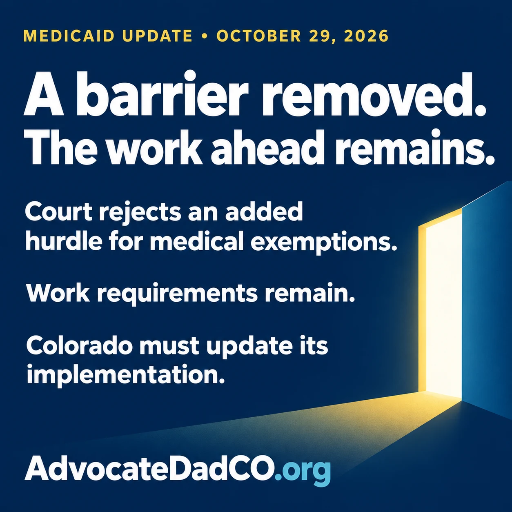

Today, a federal judge rejected an added hurdle CMS placed in the Medicaid work-requirement rules.
Here’s the plain-language version: Congress identified groups protected by the “medically frail” exemption. CMS then required people in those groups to also show that their condition significantly impaired their ability to meet the work requirements.
The court said CMS went beyond what Congress authorized.
That matters. People who qualify for a protection Congress established should not face another test an agency added.

What changed—and what remains
But let’s be clear about what this ruling does:
- It removes that additional hurdle.
- It does not eliminate Medicaid work requirements.
- It leaves significant verification requirements in place.
- It does not reverse Colorado’s proposed home- and community-based services (HCBS) cuts.
The January 1, 2027 implementation deadline remains. The court also provided six months of enforcement relief concerning states’ medical-frailty determinations while systems are adjusted. That is not a blanket six-month delay. Read the court opinion.
So where do we go from here?
We watch for CMS guidance and any appeal. But Colorado has work to do now: review screening tools, correct notices, update county instructions, and make sure eligibility systems reflect the ruling.
Then comes the part families know too well: making the protection actually work.
Can the state use information it already has? Are the forms accessible? Does the county worker have accurate instructions? What happens when someone qualifies but the system fails to recognize it?
An exemption on paper does not keep someone covered unless the process works.
I welcome this decision. Now I want to see the implementation—and accountability when families encounter the same barrier the court just removed.
Sources and follow-through
This article reflects the October 29, 2026 ruling. Watch for subsequent court orders and updated federal and Colorado instructions.
- Massachusetts v. Oz: October 29, 2026 court opinion (PDF, 16 pages). See pages 6–11 for the definition and pages 14–16 for relief.
- CMS community engagement guidance and implementation resources.
- Health First Colorado: medical-frailty explanation.